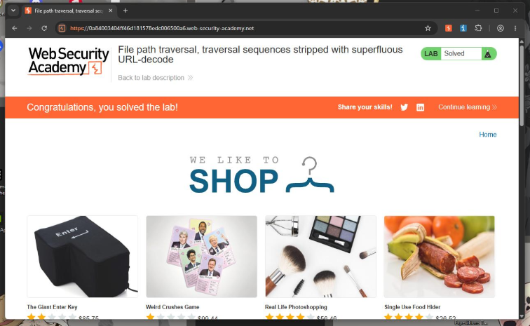

Introducción
Esta aplicación combina dos comportamientos: bloquea cualquier entrada con ../ y, además, realiza una decodificación URL adicional («superflua») antes de usar el valor. Como el bloqueo se ejecuta antes de esa decodificación extra, una barra doblemente codificada (%252f) pasa el control y luego se convierte en /
Objetivo
Leer /etc/passwd evadiendo la lista negra con doble codificación URL, aprovechando la decodificación superflua del servidor.
El laboratorio
Este reto pertenece a la Web Security Academy de PortSwigger. Puedes abrirlo aquí:
File path traversal — Practitioner portswigger.net/web-security/file-path-traversal/lab-superfluous-url-decode¿Qué es y por qué ocurre?
En percent-encoding, %2f es / y el propio % se codifica como %25; por eso %252f es la doble codificación de la barra. La lista negra se evalúa cuando el valor todavía es ..%2f.. (no contiene ../ literal); la segunda decodificación produce el recorrido cuando el control ya se ejecutó.
Procedimiento
- Iniciar el laboratorio y abrir la tienda desde el navegador de Burp.
- Localizar la petición de la imagen (GET /image?filename=…) y enviarla a Repeater.
- Comprobar que ../../../etc/passwd y la codificación simple ..%2f.. son bloqueadas.
- Sustituir el valor por el payload con doble codificación URL y enviar.
- Confirmar 200 OK con el contenido de /etc/passwd y verificar «Lab Solved».
El payload
El valor que se inyecta en el parámetro del nombre de archivo es:
..%252f..%252f..%252fetc/passwd
Cada %252f es una barra doblemente codificada. En el momento del bloqueo el valor no contiene ../ literal, así que pasa; después, la decodificación superflua convierte %252f → %2f → /, reconstruyendo ../../../etc/passwd.
Evidencia
Captura del laboratorio resuelto:

Mitigación
- Decodificar una sola vez y ANTES de validar: normalizar la entrada a su forma final y recién entonces comprobarla.
- No usar listas negras como control principal: son evadibles con codificación simple, doble, Unicode o anidamiento.
- Validación por lista blanca con un patrón estricto de nombre de archivo.
- Canonicalizar y verificar el contenedor: actúa sobre la ruta ya resuelta, por lo que es inmune a la codificación.
Conclusión
Al validar antes y decodificar después, la aplicación permite que un payload doblemente codificado burle la lista negra y, tras la decodificación superflua, se convierta en ../../../etc/passwd. La defensa correcta es decodificar una sola vez antes de validar, aplicar lista blanca y canonicalizar la ruta verificando el directorio contenedor.